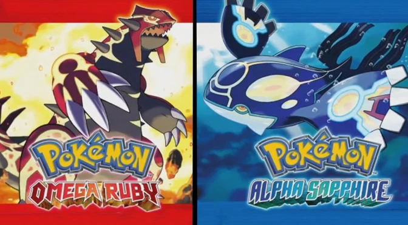

The original Pokémon Ruby and Sapphire games were developed by Game Freak and published by Nintendo for the Game Boy Advance.
They were released in Japan in November 2002, followed by releases in North America, Australia, and Europe in 2003. These
games were well-received by fans for their improved graphics, innovative gameplay, and introduction of new features such as
Pokémon contests and double battles.
In response to the success of the original versions, Game Freak decided to release enhanced versions titled "Pokémon Ruby Alpha"
and "Pokémon Sapphire Alpha." These games were released on the Nintendo 3DS console in November 2014 in Japan, followed by releases

in North America, Europe, and Australia in November 2014 as well.
The development of these enhanced versions involved introducing new features such as mega evolution, which allows players to temporarily
evolve certain Pokémon, giving them enhanced stats and abilities during battles. New challenges, Pokémon, and areas to explore were
also added to provide an enriched gaming experience compared to the original versions.
The commercialization of Pokémon Ruby Alpha and Sapphire Alpha was accompanied by a significant marketing campaign, including TV advertisements,
in-store promotions, special Pokémon distribution events, and collaborations with other Pokémon merchandise. These games were well-received by
fans and achieved great commercial success, contributing to the enduring popularity of the Pokémon franchise.
{kind=link}